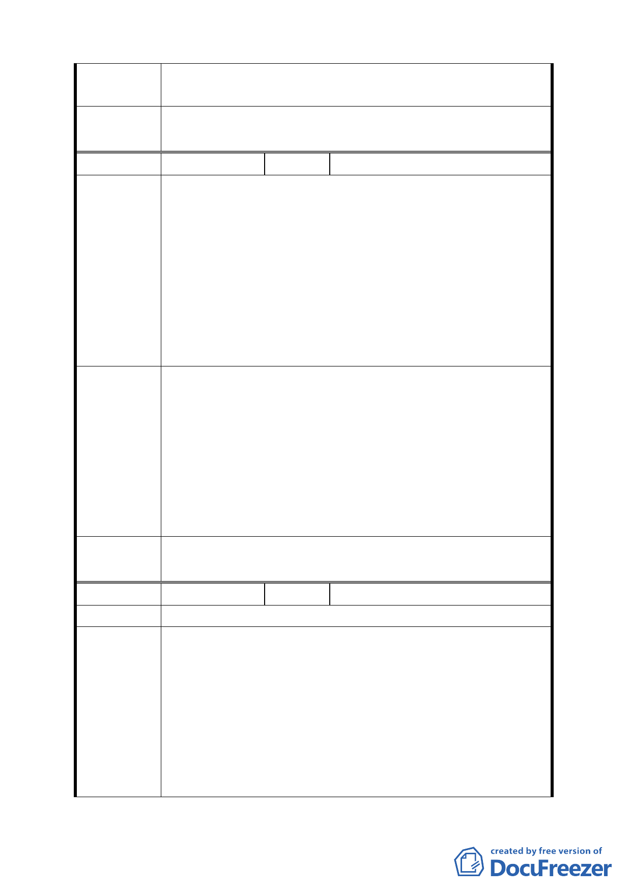

委員會議
決議
編號
陳情理由
建議辦法
委員會議
決議
編號
陳情理由
建議辦法
算，回饋項目可以代金或捐贈現有道路及公共設施用地
代替。
同編號 4。
１２
陳情人 集客小吃店
一、依都市計畫第 16 頁，關於餐飲業營業面積之限制立意
甚佳，但與現實情況不合，恐妨害溫泉產業的經營與
發展。
二、本都市計畫書對於現有的溫泉業者之現實條件，並未詳
細考量，恐難收輔導合法化之成效。
三、對於溫泉區特殊風貌之營造，如：溫泉露頭景觀區之建
設，溫泉街之打造，公共店招之設立，公有停車場之
闢建，臺北市政府應投入更多資源，才能帶動溫泉區
整體品質之提升。
一、建議都市計畫書應管制的內容，應為溫泉使用項目的質
與量，而非餐飲空間之面積，如此一來既可達到發展
與管制溫泉特定專用區之目的，又不會造成業者經營
的困難。
二、建議該都市計畫書應另列專章，以輔導現有溫泉業者之
角度，對於現有業者之建蔽率、容積率、坡度限制及
申請時程等項目放寬處理。
三、如陳情理由三。
同編號 1。。
１３
陳情人 景德鎮溫泉餐廳
一、依本案都市設計準則（二）人行步道及景觀道路規定建
築基地沿道路境界線退縮留設之無遮簷人行步道至少
1.5 公尺，其退縮部分得計入建築基地法定空地。若建
築基地沿道路境界線為山坡地護坡擋土牆，已無法退
縮，應可豁免本條退縮 1.5 公尺之規定。
二、依本案開發許可規範原則––本區受限於溫泉量之供應，
若申請案已達「溫泉區管理計畫」之可供用水總量，則
不再受理溫泉使用案之申請。
11